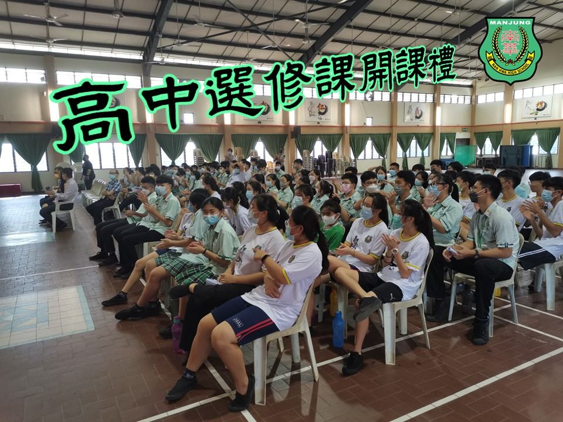
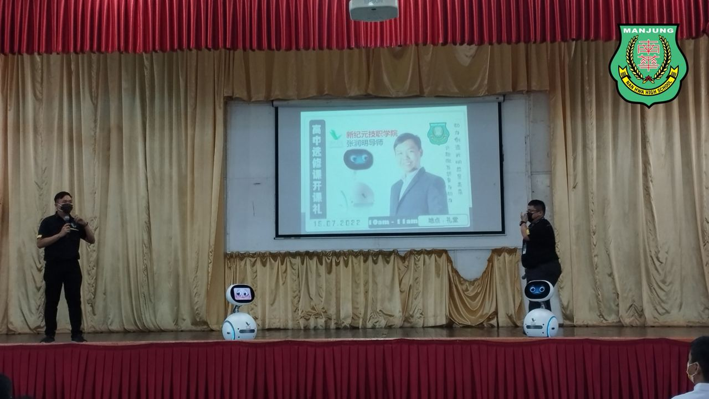
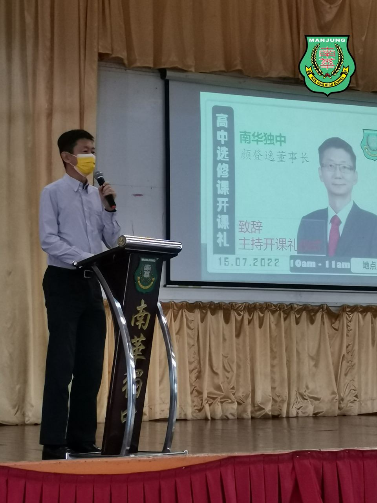
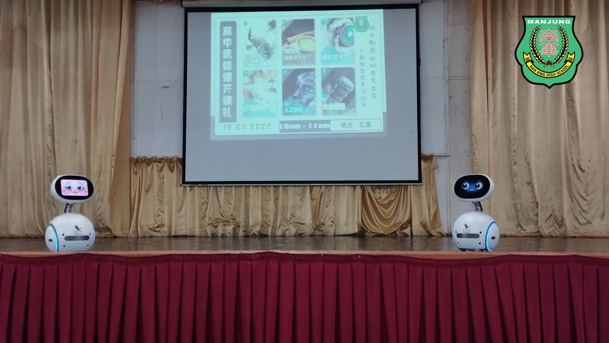
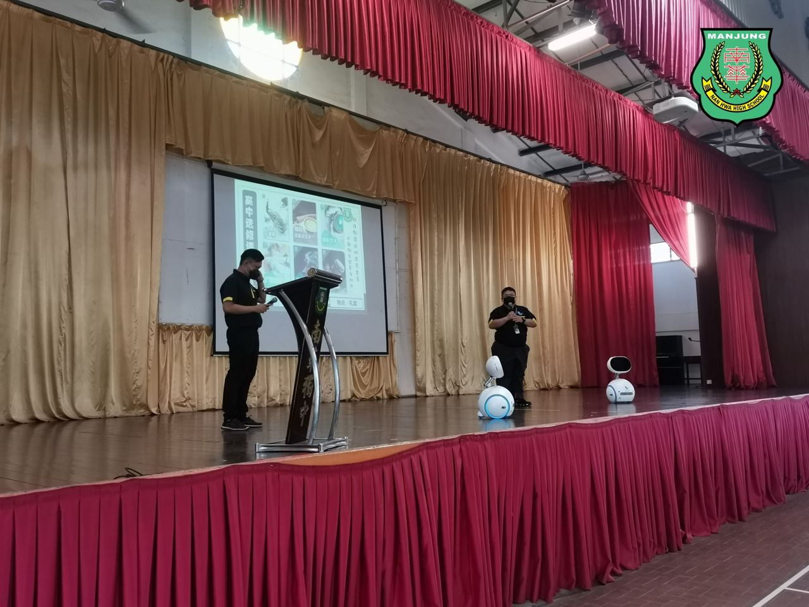
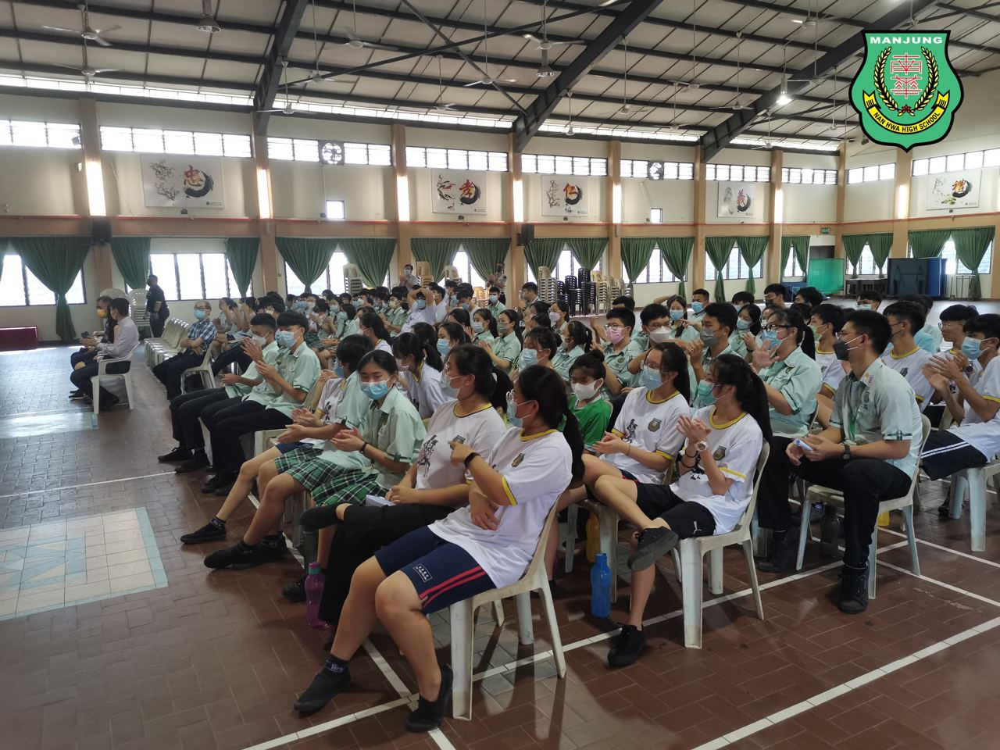

【高中选修课 @ 开课礼】
【高中选修课 @ 开课礼】
南华独中筹划已久的“高中选修课”
于15.07.2022（星期五）终于顺利开课。
现阶段“高中选修课”
开办的课程已达六门课，其中包括有：
①工笔画
②咖啡与甜点艺术
③摄影艺术
④广告设计
⑤AI人工智能
⑥大众传播
选修课授课老师在开课前，皆已前往新纪元技职学院接受专业训练。开课礼当天也请来了本校董事长颜登逸先生为选修摄影课的学生分享摄影心得，另外新纪元技职学院也派来两位导师张润明老师和李有金老师介绍AI人工智能，并实际操作智能机器人“珍宝”。
选修课结束后，全体高中生齐聚在礼堂，进行一场简单而不失隆重的开课礼。在董事长颜登逸的主持下，校园响彻高中选修课的上课钟声，象征高中选修课正式开课。
#高中选修课 #新纪元技职学院
#开课礼 #南华独中 #曼绒 #实兆远





